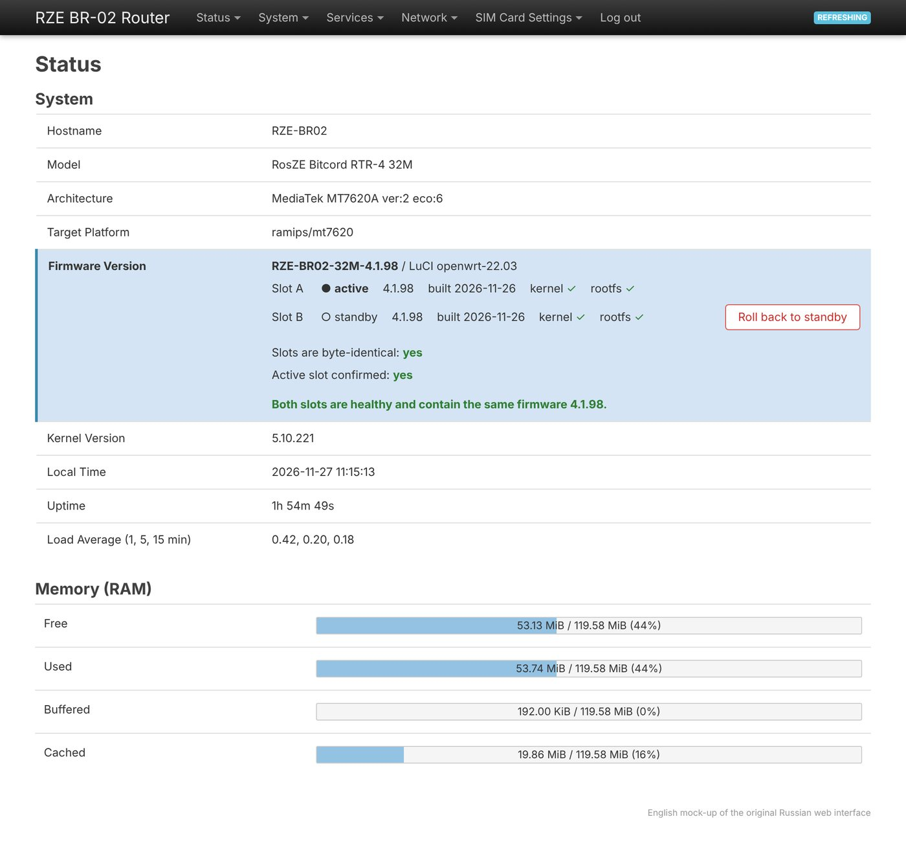
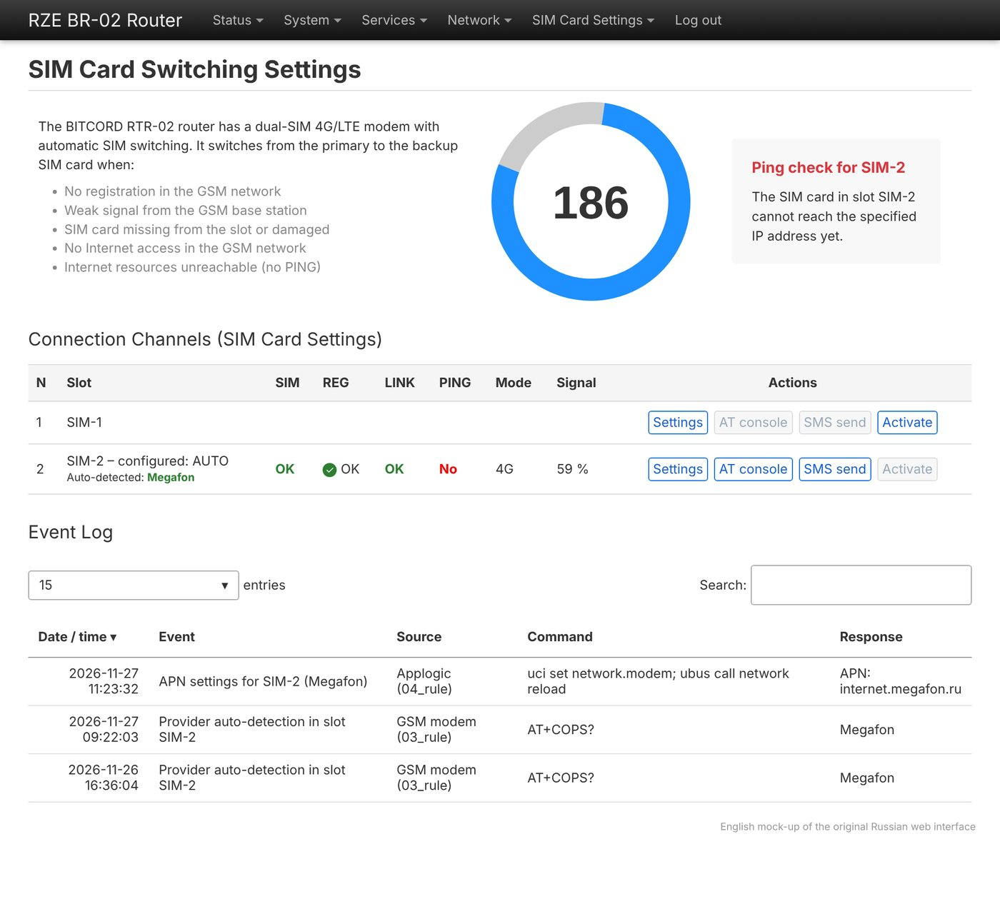
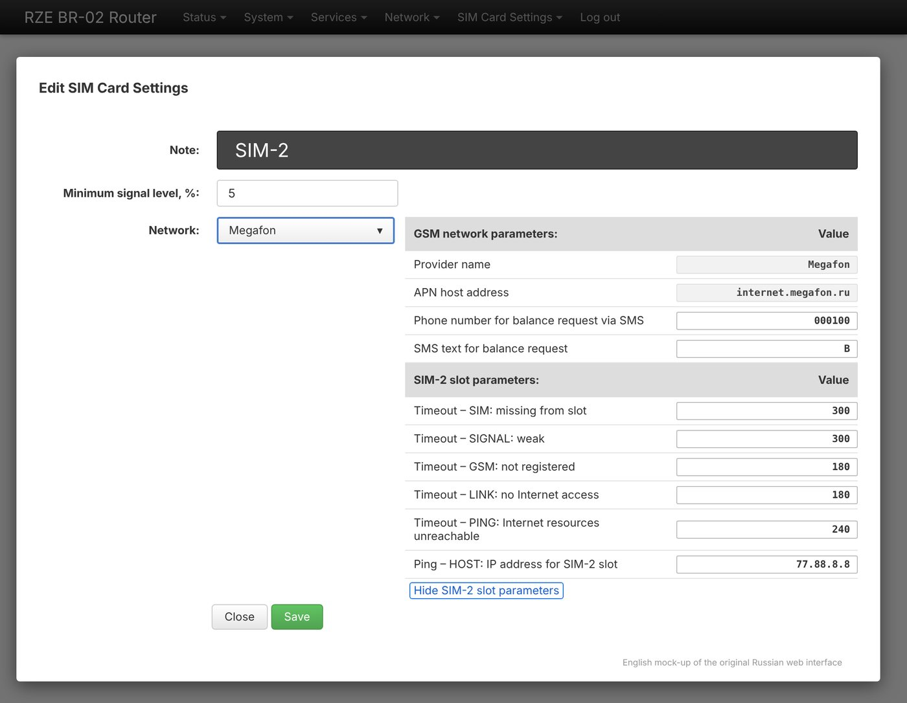
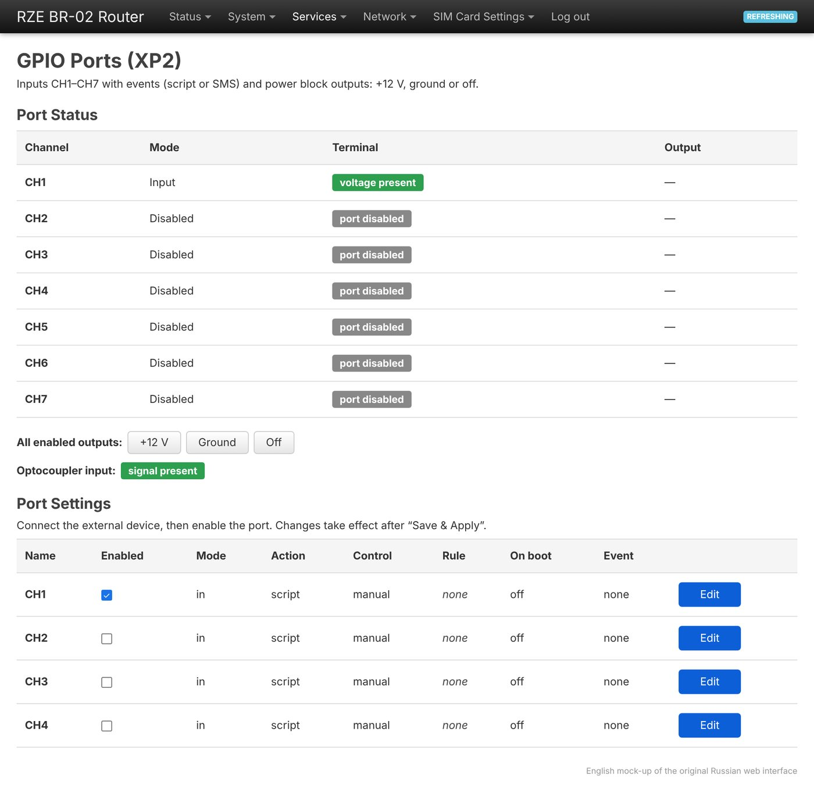
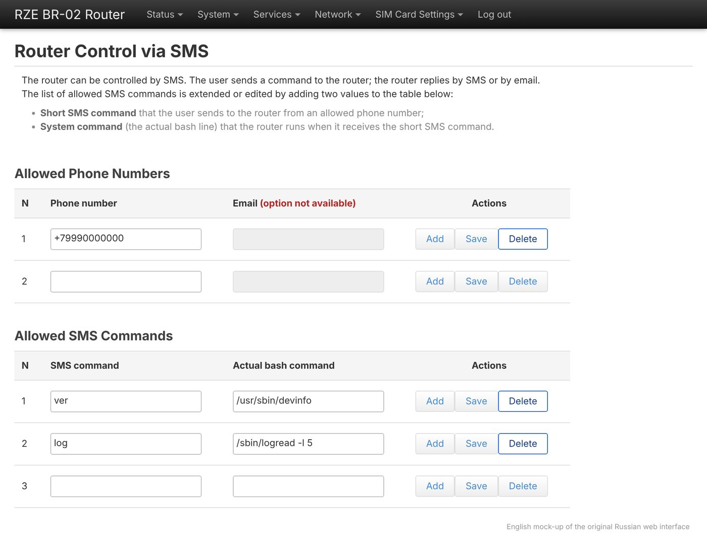
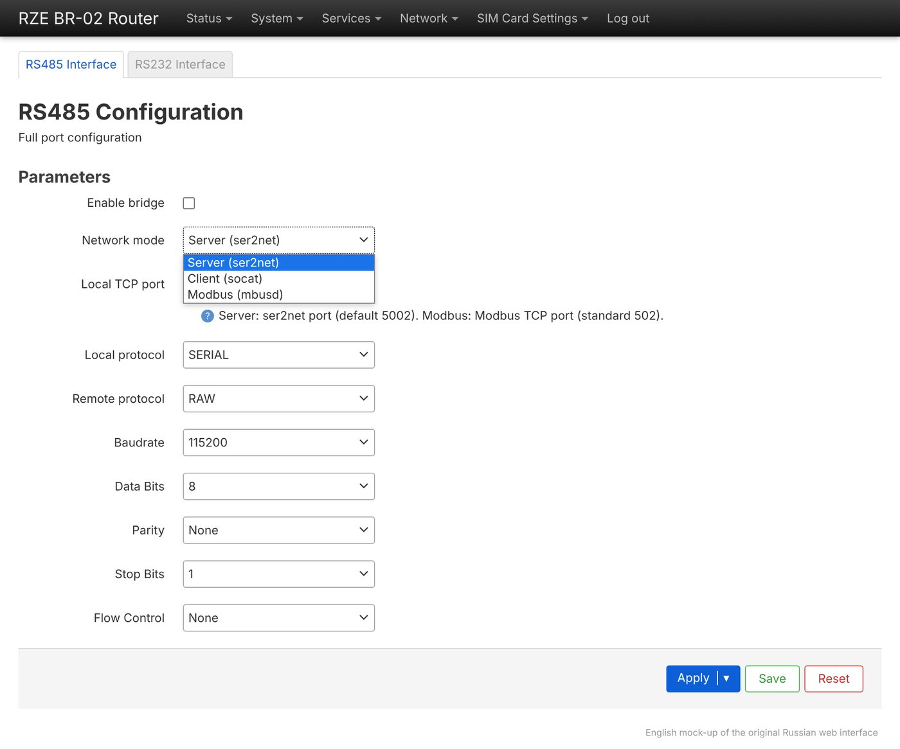
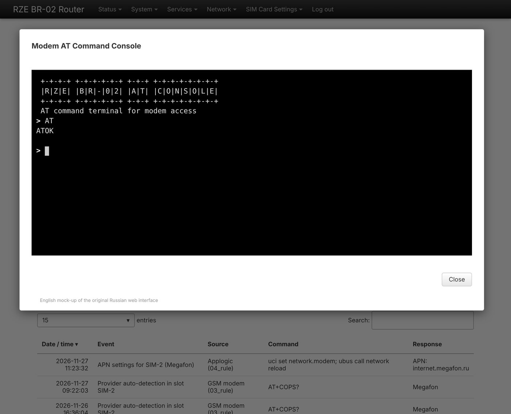

2021 – now · Rostov Electronic Plant
Firmware for the BR-02 industrial LTE router
BR-02 is a dual-SIM 4G/LTE router for industrial use. Our firmware extends OpenWrt with services for the modem, SIM slots, Internet checks, SMS, GPIO ports and an event journal; device behaviour is defined by rules rather than hard-coded in the services.
Web interface (English mock-ups of the Russian UI)






